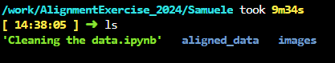

Single cell data alignment
Alignment and data decontamination for single cell RNA seq datasets
This is a brief tutorial to check out that everything works and you get some confidence with the computing interface.
- start jupyterlab on the computing cluster
- align a small example dataset with 10Million sequenced reads
- read and discuss the alignment report
- have an idea of how the data is structured
- run data decontamination in
R
Start jupyterlab on the cluster
Log onto ucloud at the address http://cloud.sdu.dk using the university credentials.
Only after logging in, open and accept this invitation to a ucloud project BY CLICKING HERE.
When you are logged in, be sure to choose the project for the NNF course (red circle) you have been invited in. Then click on the Apps button (green circle).
- Find the app
Jupyterlab(red circle), which is under the titleFeatured.
- Click on the app button. You will get into the settings window. Load the application settings following the illustrations below. Note that you need to select
AlignmentExercise_2024(green circle).
- Now, click on the button
Submit(red circle).
- Wait to go through the queue. When the session starts, the timer begins to count down (red circle). In a couple of minutes you should be able to open the interface through the button (green circle).
Run the alignment on the bash command line
The software to align the data to a reference transcriptome is cellranger. It is already downloaded.
Now that you have opened the interface, you should be able to see jupyterlab. It is just an interface to code in any programming language and to use the command line, together with a browser (seen on the left side of the screen).
You should see in the browser the folder AlignmentExercise_2024. You can double click on it, and it will open showing some student folders as illustrated below.
Now click on File --> New --> Terminal. You should see a command line opening: a black screen where you type some commands - this is what you use for a lot of bioinformatics tools. It looks outdated, but it is very much not!
Type ls and press Enter. ls lists the files in your starting directory. You will see the same files and folders as in the browser just when you opened the app:
We need to go into your personal directory. Write cd AlignmentExercise2024/YourName and press Enter. Now you Changed Directory and find yourself in your personal one. If you write ls and press enter you can see which files you have. You can do the same in the browser using your mouse.

We need to run the alignment of a dataset. Choose a name between dataset1, dataset2, dataset3. Those are from three samples of Lotus Japonicus, but contains only 10 millions reads for the sake of time.
Write the following command:
../cellranger count --id aligned_data --fastqs ../Datasets/dataset1 --transcriptome ../Lotus_japonicus --no-bam.
Change dataset1 into dataset2 or dataset3 if you wish. You will get a lot of messages for quite some minutes.
The command meaning is:
../cellranger countruns the software cellranger and the function counting unique mRNA transcripts, demultiplexing all UMIs from the data.--id aligned_datasets the name for the output folder--fastqs ../Datasets/dataset1sets the folder containing the files infastqformat, containing the unaligned reads and al barcodes--transcriptome ../Lotus_japonicussets the folder with the reference transcriptome--no-bamproduce only the expression matrix and not an aligned transcriptome inbamformat (it takes too much time and space and we do not use it)
Look at the alignment report
When successfully done, you should get a message of the type
Write ls and press enter. You can see the output folder aligned_data now.

Look inside it using the manual browser with your mouse. There is a lot of stuff.
Open the subfolder out and the file called web_report.html, which contains all statistics about your alignment and a very basic analysis. Open the file and explore all its content: the question marks provide a lot of explanations which are useful to understand the content of the report. Note: click on Trust HTML to make the content visible.
Decontaminate the data
Now you are ready to see some coding to decontaminate the data. We will open a notebook - it is a document containing text, images and actual computer code which can be executed.
This time, the computer code is not the one on the command line, but it is in the R language.
Using the browser, go into your folder and open the file Cleaning the data.ipynb. Go through the text as long as you wish. When finding a block with some code, click on it, and press Shift+Enter or the Play icon (little triangle) on top of the notebook. You should see some output coming out of each block of code (see below).
End
If you made it this far, you went though all the exercise. Now you have a small preview of the instruments we are going to use when we analyze the real data produced in the lab!